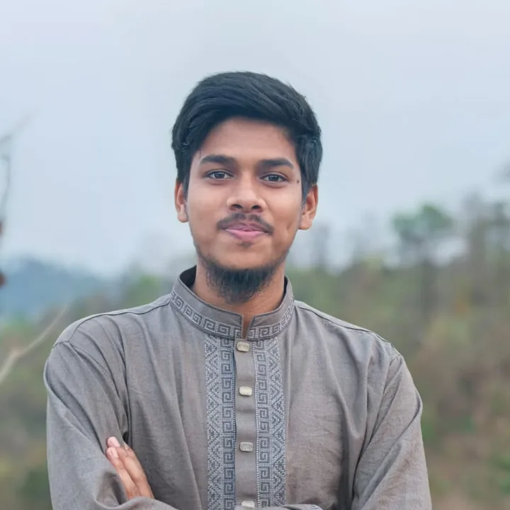

Roots
Born into a tea-shop family. Father: self-made, a mathematics tutor. Mother: a homemaker of firm principles.
Electrical & Electronic Engineering · CUET
|
I enjoy turning ideas into working circuits and useful software. From a home-planning web tool to ESP-32 sensor projects, I like building things that can be measured, tested and improved, and I stay curious about physics, space and history along the way.

V(t) = Vm sin(ωt + φ) EEE · CUETI am a student of Electrical and Electronic Engineering at the Chittagong University of Engineering and Technology (CUET), Bangladesh. I am drawn to the place where electronics meets software, where a few lines of code can make a circuit sense, decide and respond.
My first big personal project was PlanCraft 3D, a free home planning tool I started in order to plan my family's house. It grew into a complete 2D and 3D planner with a cost estimator that uses local Bangladeshi material prices. Alongside it, I build embedded projects on the ESP-32 to understand sensors, timing and real-world signals.
Outside the lab I read and think about quantum physics, astrophysics, geopolitics and history, and I take photographs of nature whenever the light is kind.
My father did not get the success he worked so hard for, yet his greatest success is me. I am the next chapter of his legacy.
I grew up in the village of South East Mekhal, in Hathazari, Chattogram, helping in my father's tea shop. My father was an educated man and a gifted mathematician who raised us through tuition and hard work; my mother kept our home with strong values. Their sacrifice is the reason I study today.
In a circuit, resistance never stops the current. It only asks for more voltage. This is the story of how I kept finding mine.
English · বাংলাBorn into a tea-shop family. Father: self-made, a mathematics tutor. Mother: a homemaker of firm principles.
Nursery to class 3 at a Noorani madrasa, finishing in 2nd place.
Joined class 4 at roll 41 of 45, then stood 1st in every exam. PSC A+, the only one in the school, plus 3 of 3 scholarships passed.
2nd among 126 in admission, then 1st from class 6 to 10. JSC GPA 4.93. SSC GPA 4.72, a result that hurt, because I had hoped for A+.
During SSC my mother was diagnosed with stage-4 lymphoma. The tea shop could not cover her treatment and our family was shaken financially.
Among 121 A+ students I felt small, yet finished 3rd in first year and 1st in second year. Shanta Apu taught me Chemistry and Biology free for two years. I will always be grateful.
1206 / 1300, the highest in college, Golden A+. Cracked CUET, Dhaka University and SUST and was shortlisted for the BUET written round.
October 2023: began Electrical and Electronic Engineering, and since then I support my family through tutoring. Alhamdulillah, the journey continues.
FEATURED · WEB APPLICATION
A free 2D and 3D home planner that runs in the browser and on Android phones. Draw walls, place doors, windows and furniture, add up to ten floors, then walk around the building in 3D. A built-in cost estimator turns the plan into quantities and a budget with local Bangladeshi prices.
Hands-on builds, each one tested on the breadboard and recorded on video.
PROJECT 01 · MEASUREMENT
An ultrasonic sensor sends a pulse and times its echo. The ESP-32 converts the time of flight into centimetres and shows the reading live on an OLED display. I checked the output against a ruler to see how accurate it really is.
PROJECT 02 · SENSING
An infrared obstacle sensor watches the path. While it is clear, a green LED stays on. When a hand or object comes close, the ESP-32 switches to a red warning LED and prints “Obstacle Detected” on the serial monitor.
PROJECT 03 · INSTRUMENTATION
A contactless RPM meter. The ESP-32 counts pulses from an optical sensor as a motor spins and displays the speed on an OLED screen. I compared it side by side with a commercial handheld tachometer to validate the readings.
PROJECT 04 · CONTROL
A three-colour traffic signal driven by the ESP-32. It cycles through green, yellow and red with timed delays, which is a clean first exercise in GPIO outputs and sequential state control.
Engineering teaches me how to build. These subjects remind me to keep asking why.
Waves that are also particles, probabilities instead of certainties. It is the physics behind every transistor I use.
iħ ∂ψ/∂t = ĤψStars, orbits and the scale of the cosmos. I even photographed a 22° solar halo, which you can see in the gallery below.
F = G m₁m₂ / r²How geography, energy, trade and power shape nations, and why a single decision in one capital can be felt across the world.
interests × geographyEmpires, ideas and turning points. Studying the past is the best way I know to understand the choices we face today.
past → present → futureHistory, philosophy and a few words of courage that I return to whenever the road gets hard.
Won the Shaheed Abu Sayed Hall Shortpitch Cricket Tournament 2026 with my team, and was honoured with the Player of the Match awards and the Player of the Tournament trophy.
Finished HSC 2022 with Golden A+ and 1206 out of 1300, the highest marks in Hathazari College. Received the Government of Bangladesh Higher Secondary Completion Award (HSCA) 2022 in the Science group, Chattogram Board.
Honoured with recognition trophies in Biology and Chemistry for my HSC 2022 performance. The trophies sit proudly on my shelf alongside my sports medals.
Photography is my quiet way of noticing small things: a droplet, a rainbow, a ring of light around the sun, and the quiet corners of the places I have lived and studied. Tap a photo to enlarge it.
I would be glad to hear from you, whether it is about an internship, a project, feedback on PlanCraft 3D, or simply a conversation about science.
A STORY OF A TEA-SHOP BOY
My father did not get the success he worked so hard for, yet his greatest success is me. I am the next chapter of his legacy.
My name is Abdullah Mukter (Jewel), and I am currently studying in the Department of Electrical and Electronic Engineering (EEE) at CUET.
My father runs a tea shop in our village, South East Mekhal in Hathazari, Chattogram, and as a boy I was a helping hand there. He is an educated man who studied through great hardship, and in those days he supported his family by giving private tuition himself. He was an expert in mathematics. My mother is a homemaker and a woman of firm principles.
My learning began at a madrasa, the Ishaatus Sunnah Tahfizul Quran Noorani Madrasa. I studied there from the nursery class to class three, and I finished my madrasa life by securing second place in class three.
Next I joined the primary school of my area, South-East Mekhal Government Primary School, in class four. My roll number was 41 out of 45 students. In the first term exam I stood first, and after standing first again in the annual exam I moved up to class five. I kept first position in every exam and finished primary school with distinction.
In our time there was the PSC examination. I received an A+, the only student in our primary school to do so, and I also passed all three scholarship examinations that I sat for.
My journey continued at the high school of my area. I was admitted to class six at South Mekhal High School. There was an admission test in our time, and I began by securing second place among 126 students. The first place went to a girl who was enormously talented!
From class six to class ten I held first position continuously and finished my school life that way. In class eight I passed the JSC examination with a GPA of 4.93. In class nine I took the Science group, but in school I could not do very well in science, because I understood the concepts less. My school life ended with a GPA of 4.72 in the SSC. The result was very disappointing, as I had been expecting A+. I was heartbroken, and I began my college life at Hathazari College.
I forgot to mention something. During my SSC Islamic studies exam, my mother was diagnosed with blood cancer (stage 4 lymphoma). At that time my whole family, and my own state of mind, were completely broken. The income from my father's tea shop was nowhere near enough for her treatment, and my family was financially devastated.
In our time about 305 or 306 students were admitted to the college, and 121 of them were A+ students, which made me feel very small. Even so, I kept studying with a firm mind, and in the first-year final exam I secured third place. That achievement was enough to turn my life around. I got a completely different idea of my own potential, and a mindset of “I can do it” began to take root.
Because we were not financially comfortable, coaching was a real problem for me in college. At that time Shanta Apu extended a helping hand and taught me Chemistry and Biology for two full years, free of charge. I am most grateful to her.
Going on like this, I became even more focused and kept working tirelessly. In the second-year final exam I stood first, and that achievement raised my confidence greatly.
I completed my college life in HSC 2022 with 1206 out of 1300, the highest marks in the college, and a Golden A+. Then the hard phase of admission tests began, and I successfully cracked CUET, Dhaka University and SUST.
From our college, I alone was selected to sit the BUET exam (I had 96% marks in Physics, Chemistry and Math, and BUET wanted 92%). I passed the BUET preliminary and was selected for the written round, but when I did not find my name in the written result, I was somewhat broken. Even so, Allah has given me many things that were beyond my expectations, Alhamdulillah.
And so my journey began with admission to EEE at CUET in October 2023. Since then I have been supporting my family through tuition, and Alhamdulillah, Allah has kept me well and has carried me along until now.
— Abdullah Mukter Jewel
আমি আব্দুল্লাহ মুক্তার(জুয়েল), বর্তমানে পড়াশুনা করছি EEE Department এ, CUET।আমার বাবা আমার গ্রামে চায়ের দোকান করেন এবং শিক্ষিত একজন ব্যক্তি ছিলো যিনি জীবনে অনেক কষ্ট করে নিজের পড়াশুনা করছে এবং ওই সময়ে নিজে টিউশন করে তার পরিবার কে চালিয়েছে(He was expert in mathematics at that time)। আমার আম্মু একজন গৃহিণী এবং নীতিবান একজন মেয়ে। আমার পড়াশুনার যাত্রা শুরু হয় মাদ্রাসার মাধ্যমে, নাম তার এশায়াতুস সুন্নাহ্ তাহফিজুল কুরআন নূরানী মাদ্রাসা। এইখানে আমি শিশু শ্রেণি থেকে তৃতীয় শ্রেণি পর্যন্ত পড়াশোনা শেষ করি, তৃতীয় শ্রেণিতে দ্বিতীয় স্থান অর্জন করে আমি মাদ্রাসা জীবন শেষ করি।
এরপর আমার পড়াশুনার যাত্রা শুরু হয় আমার এলাকার প্রাইমারী স্কুলের মাধ্যমে, দক্ষিণ পূর্ব মেখল সরকারি প্রাথমিক বিদ্যালয়ে আমি চতুর্থ শ্রেণিতে ভর্তি হয়। রোল ছিল ৪১ মোট ৪৫ জন স্টুডেন্ট এর মধ্যে। প্রথম সাময়িক পরীক্ষায় আমি প্রথম স্থান অর্জন করি, এইভাবে বার্ষিক পরীক্ষায় প্রথম স্থান অর্জন করে আমি পঞ্চম শ্রেণি তে উঠি। এবং কৃতিত্বের সাথে প্রতিটি পরীক্ষায় 1st position ধরে রেখে আমার প্রাথমিক বিদ্যালয়ের জীবনের সমাপ্তি ঘটায়। আমাদের সময় PSC পরীক্ষা ছিলো, আমি A+ পাই একমাত্র আমাদের প্রাথমিক বিদ্যালয়ে,এবং এর পাশাপাশি ৩ টা বৃত্তি পরীক্ষায় ৩ টা তেই উত্তীর্ণ হয়।
এরপরে আমার শিক্ষা জীবনের যাত্রা শুরু হয় আমার এলাকার উচ্চ বিদ্যালয়ে। দক্ষিণ মেখল উচ্চ বিদ্যালয়ে ষষ্ঠ শ্রেণিতে ভর্তি হয়। আমাদের সময়ে ভর্তি পরীক্ষা ছিলো, আমি মোট ১২৬ জন স্টুডেন্ট এর মধ্যে ২য় স্থান অর্জন করে যাত্রা শুরু করি। আমাদের মধ্যে প্রথম ছিল এক মেয়ে, প্রচুর ট্যালেন্টেড ছিলো! যাই হোক,আমি ক্লাস ৬ থেকে ক্লাস ১০ পর্যন্ত লাগাতার 1st position ধরে রেখেই আমার স্কুল জীবন শেষ করি। ক্লাস ৮ এ JSC পরীক্ষায় আমি জিপিএ 4.93 পেয়ে উত্তীর্ণ হয়। ক্লাস 9 এ আমি সায়েন্স নি। কিন্তু স্কুল জীবনে আমি বিজ্ঞান নিয়ে খুব একটা ভালো করতে পারিনি,কনসেপ্ট কম বুঝতাম। যাই হোক এসএসসি তে 4.72 পেয়ে আমার স্কুল জীবন শেষ হয়। এবং আমার রেজাল্টটা ছিল খুবই হতাশাজনক, আমি A+ আশা করছিলাম। অনেক ভেঙে পরি,এবং নিজের জীবনের কলেজ জীবনের যাত্রা শুরু করি হাটহাজারী কলেজ দিয়ে। আমাদের সময়ে মোট ৩০৫/৩০৬ জন শিক্ষার্থী ভর্তি হয় এবং তার মধ্যে ১২১ জন A+ প্রাপ্ত স্টুডেন্ট ছিলো যেখানে নিজেকে অনেক ছোট মনে হচ্ছিলো। তারমধ্যে নিজের পড়াশুনা খুব শক্ত মনে চালিয়ে যেতে থাকি এবং 1st year final পরীক্ষায় আমি তৃতীয় স্থান অর্জন করি। এই অর্জন টা আমার জীবনের মোড় ঘুরিয়ে দেওয়ার জন্য যথেষ্ট ছিলো,নিজের potential সম্পর্কে সম্পূর্ণ ভিন্ন ধারণা পেয়েছিলাম। I can do it, এই ধরনের মনোভাব চলে আসতে থাকলো।
এইখানে একটা কথা বলতে ভুলে গেছিলাম , এসএসসি এর ইসলাম ধর্ম পরীক্ষার সময় আমার আম্মুর ব্লাড ক্যান্সার (4th stage, lymphoma)ধরা পরে,ওই সময়ে আমার পুরো পরিবার,আমার মন মানসিকতা সম্পূর্ণ রূপে ভেঙে যাই। আমার আব্বুর চায়ের দোকান থেকে উপার্জিত অর্থ উনার চিকিৎসার জন্য মোটেও যথেষ্ট ছিলো না,এই সময়ে আমার পরিবার আর্থিকভাবে পুরোপুরি ভেঙে যাই।
কলেজ জীবনে আর্থিকভাবে সচ্ছল না থাকায় কোচিং করা নিয়ে ভালোই সমস্যা হচ্ছিলো তার মধ্যে আমাকে সাহায্যের হাত বাড়িয়ে দেন Shanta Apu, পুরো ২ বছর আমাকে Chemistry এবং biology পড়িয়েছিলেন ফ্রী তে। উনার প্রতি আমি সবচেয়ে বেশি কৃতজ্ঞ। এইভাবে চলতে চলতে আমার পড়াশুনায় আমি আরও মনোযোগ হয়,এবং নিরলস পরিশ্রম করে যাচ্ছি নিজের পড়াশুনা নিয়ে। 2nd year final পরীক্ষায় আমি প্রথম হয়। এই অর্জন আমার confidence অনেক বের যাই এবং এইভাবে নিজের HSC (২০২২) তে আমি ১৩০০ তে ১২০৬(highest number in college) পেয়ে Golden A+ সহকারে আমার কলেজ জীবন যাত্রা শেষ করি।
এরপর আমার জীবনের কঠিন যাত্রা শুরু হয় ভর্তি পরীক্ষার phase নিয়ে এবং আমি কৃতিত্বের সাথে CUET,Dhaka University, SUST crack করি। আমাদের কলেজ থেকে একমাত্র আমি BUET এর পরীক্ষায় বসার জন্য সিলেক্টেড হয়( I have 96% marks in physics, chemistry, Math and BUET want 92%)। BUET এর প্রিলি পাস করে রিটেন এর জন্য সিলেক্ট হয়,তবে রিটেন ফলাফলে নিজের নাম না পেয়ে কিছুটা ভেঙে পরি। তারপরেও আল্লাহ্ আমাকে অনেক কিছুই দিয়েছেন যা আমার এক্সপেক্টেশন ও ছিলো না, Alhamdulillah।
এইভাবে আমার যাত্রা শুরু হয় CUET এর EEE তে ভর্তির মাধ্যমে ২০২৩ সালে(অক্টোবর মাসে)। এরপর থেকে টিউশন করে আমি আমার পরিবার কে চালাচ্ছি এবং Alhamdulillah আল্লাহ্ যথেষ্ট ভালো রেখেছেন,আমাকে চালিয়ে নিচ্ছেন এখনো পর্যন্ত।
— আব্দুল্লাহ মুক্তার (জুয়েল)